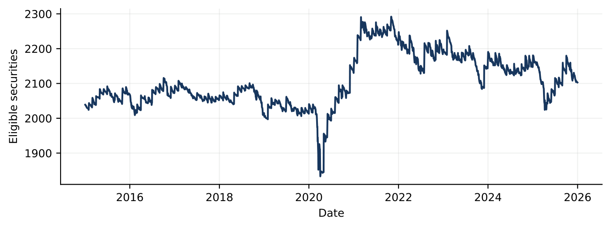
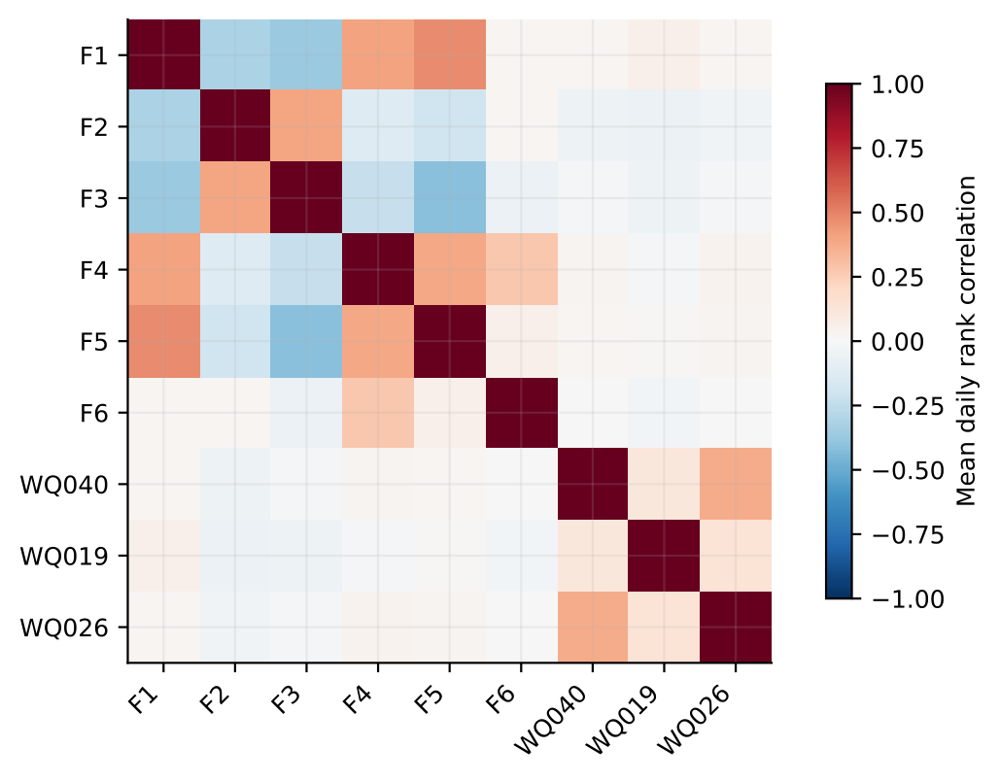
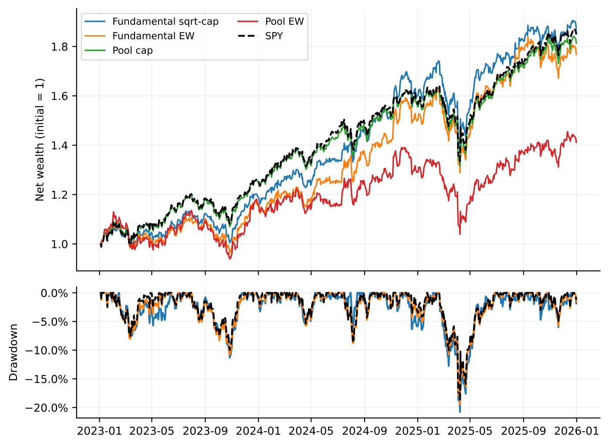
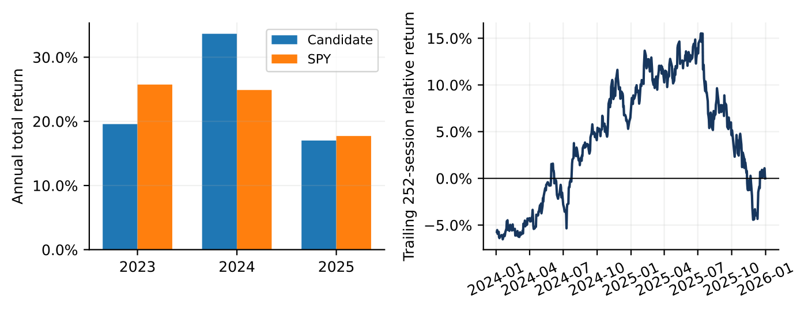
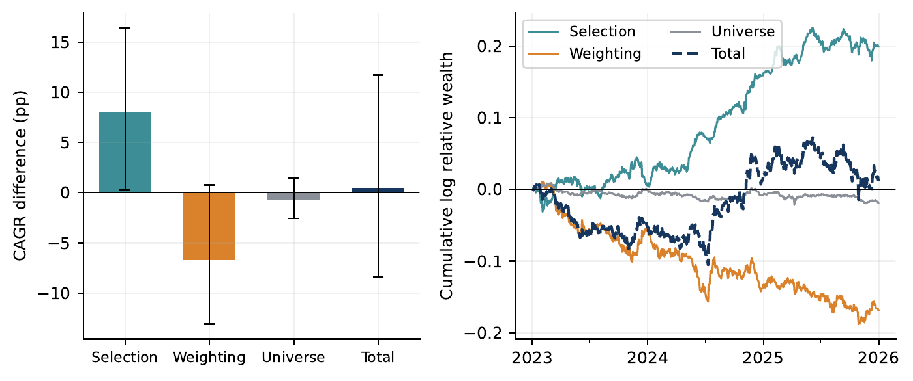
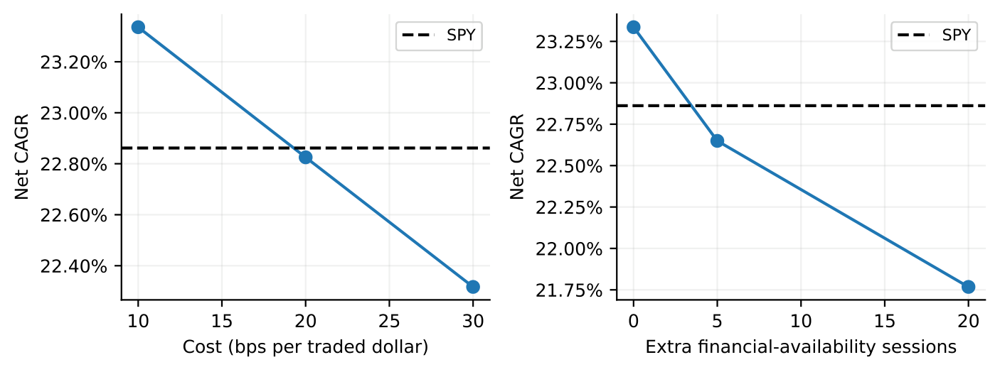
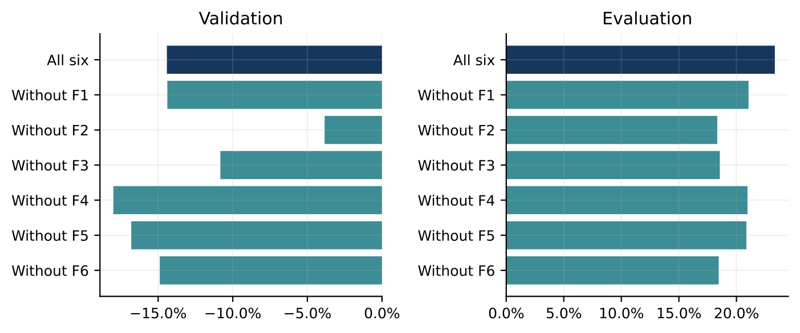
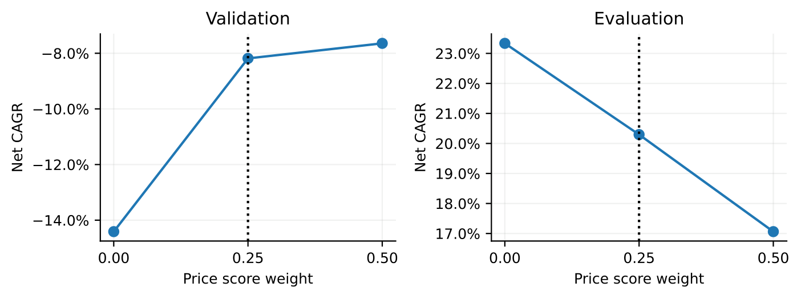
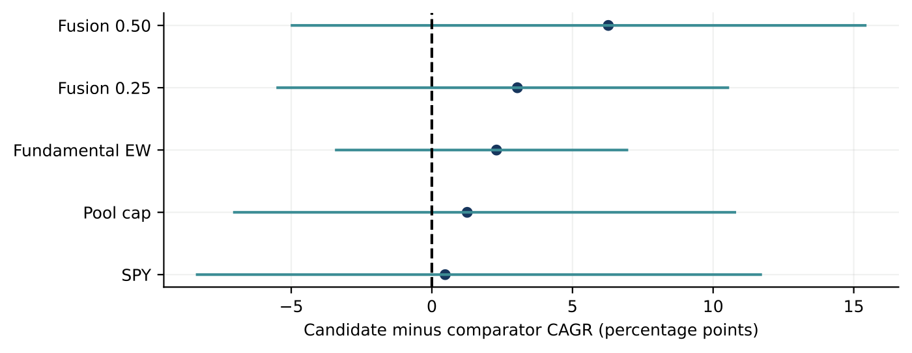

DSA5205 · Project 2 · Team 34
A comparative study of simple scores and price–fundamental models, 2015–2025
Group_34_Report.pdf · github.com/UtAstN/dsa5205-project2-final
Overview
01 · Markets and assets

01 · Decision time, execution, costs
02 · The label
02 · Six fundamental signals
| Signal | Construction | Fixed sign |
|---|---|---|
| F1 | TTM net-income residual relative to market cap | +1 |
| F2 | Book-equity residual relative to market cap | −1 |
| F3 | Quarterly-sales residual relative to market cap | −1 |
| F4 | Quarterly net-income residual relative to book equity | +1 |
| F5 | TTM free cash flow / (market cap + total liabilities − cash) | +1 |
| F6 | Seasonal earnings surprise / market cap strictly before release | +1 |
02 · Residual construction
02 · Price–volume screening

02 · Leakage controls
03 · Time split and training windows
| Forecast half | Training rows | Last signal | Last label end |
|---|---|---|---|
| 2023 H1 | 4,114,869 | 2022-12-14 | 2022-12-30 |
| 2023 H2 | 4,382,585 | 2023-06-14 | 2023-06-30 |
| 2024 H1 | 4,650,303 | 2023-12-13 | 2023-12-29 |
| 2024 H2 | 4,914,431 | 2024-06-12 | 2024-06-28 |
| 2025 H1 | 5,184,802 | 2024-12-13 | 2024-12-31 |
| 2025 H2 | 5,437,991 | 2025-06-12 | 2025-06-30 |
03 · Models, pre-declared grids, one selection rule
| Family | Pre-declared candidates | Selected on 2022 |
|---|---|---|
| Ridge | per-sample penalty {0.001, 0.01} | 0.01 |
| Lasso | penalty {0.0001, 0.0005} | 0.0005 |
| XGBoost | depth {2, 3} · 120 trees · lr 0.05 · subsample 0.8 · min child 100 · seed 5205 | depth 2 |
03 · Overfitting control
04 · From score to position
04 · Net-return accounting
05 · End-to-end run with the authorised data snapshot
# 1 · data build: aligned daily panel + 10-interval labels from the raw snapshot $ PYTHONPATH=src .venv/bin/python -m usq.database.close_labels \ --source data --output runs/snapshots/team34_nextclose10_v2 # 2 · six fundamentals → composite → buffered selection → √cap weights → cost ledger $ PYTHONPATH=src .venv/bin/python -m usq.project2.final_study \ --standalone --output runs/demo_video # 3 · read the net result (14 portfolio/phase combinations) $ grep fundamental_sqrt_cap runs/demo_video/portfolio_summary.csv
05 · Recorded run on a clean checkout, shipped aggregates only
$ PYTHONPATH=src .venv/bin/python -m pytest tests -q ......................................... [100%] 41 passed in 2.35s $ PYTHONPATH=src .venv/bin/python scripts/build_final_report_assets.py $ ls reports/final/figures ablation.pdf annual_rolling.pdf attribution.pdf correlation.pdf fusion.pdf intervals.pdf stress.pdf styles.pdf universe.pdf wealth_drawdown.pdf $ .venv/bin/python -c "print selected rows of results/project2_final/portfolio_summary.csv" case phase days annual_return sharpe max_drawdown mean_daily_turnover fundamental_sqrt_cap evaluation 752 0.2334 1.3806 -0.2078 0.0082 pool_cap evaluation 752 0.2208 1.3637 -0.1946 0.0023 fusion_25 evaluation 752 0.2030 1.0287 -0.2576 0.0416 cost_20 evaluation 752 0.2283 1.3548 -0.2083 0.0082 lag_20 evaluation 752 0.2177 1.3095 -0.1979 0.0084 $ cd reports/final && pdflatex Group_34_Report.tex # ×2 → 22-page PDF
06 · Out-of-sample 2023–2025, net of 10 bps
| Strategy | CAGR % | Vol % | Sharpe | MDD % | Turn %/day |
|---|---|---|---|---|---|
| Fundamental √cap — final candidate | 23.34 | 16.14 | 1.381 | −20.78 | 0.82 |
| SPY buy-and-hold | 22.86 | 15.34 | 1.419 | −18.76 | — |
| Fundamental cap | 22.86 | 16.00 | 1.367 | −20.76 | 0.83 |
| Fundamental equal-weight | 21.04 | 17.74 | 1.165 | −20.87 | 0.99 |
| Pool cap — same universe, no signal | 22.08 | 15.51 | 1.364 | −19.46 | 0.23 |
| Expanded Ridge A′ / B′ | 19.37 / 14.42 | 26.35 / 24.79 | 0.803 / 0.667 | −32.02 / −33.26 | 6.81 / 4.69 |
06 · Wealth and drawdown paths

06 · Year by year
| Year | Candidate % | SPY % | Diff pp |
|---|---|---|---|
| 2023 | 19.57 | 25.74 | −6.17 |
| 2024 | 33.65 | 24.89 | +8.76 |
| 2025 | 17.01 | 17.72 | −0.71 |
Continuously held portfolio; 2023 includes entry costs, 2025 liquidation.

06 · Allocation explains most of the gap to SPY
06 · Where the half point comes from

| Link, 2023–25 | pp | 95 % interval |
|---|---|---|
| Weighting: √cap pool − cap pool | −6.70 | [−13.10, 0.78] |
| Universe: cap pool − SPY | −0.78 | [−2.57, 1.45] |
| Total: candidate − SPY | +0.47 | [−8.34, 11.69] |
Exact identity on stored daily returns · computed after the evaluation period was inspected · selects nothing
06 · Reading the attribution honestly
| Selection link by matched weighting | 2022 pp | 2023–25 pp | 95 % interval | IR |
|---|---|---|---|---|
| Equal: fundamental EW − pool EW | +0.80 | +8.79 | [−1.55, 18.57] | 1.14 |
| √cap: final candidate − pool √cap | +3.16 | +7.96 | [0.30, 16.41] | 1.29 |
| Cap: fundamental cap − pool cap | +6.06 | +0.78 | [−7.47, 10.30] | 0.11 |
06 · Do fundamentals help a learned forecast?
| Model · 5-session, EW | A % | B % | B − A pp |
|---|---|---|---|
| Ridge | 8.25 | 8.51 | +0.26 |
| Lasso | 11.34 | 11.34 | 0.00 |
| XGBoost | 9.49 | 9.83 | +0.35 |
| Buffered Ridge A | 8.32 | — | turn 16.4 → 8.4 |
| Buffered Ridge B | — | 11.62 | turn 10.7 → 5.0 |
06 · Cost and information-delay stress
| Scenario | CAGR % | Sharpe | MDD % |
|---|---|---|---|
| 10 bps, baseline timing | 23.34 | 1.381 | −20.78 |
| 20 bps | 22.83 | 1.355 | −20.83 |
| 30 bps | 22.32 | 1.329 | −20.88 |
| +5-session availability delay | 22.65 | 1.348 | −20.83 |
| +20-session availability delay | 21.77 | 1.310 | −19.79 |
| SPY | 22.86 | 1.419 | −18.76 |
Each scenario reruns the full ledger; delays rebuild the accounting variables rather than shifting a finished factor.

06 · Leave-one-factor-out

No stable stand-alone alpha per factor is claimed, and the factor set was not changed after seeing these results.
06 · Extension: score-level fusion with a price model

| λ | CAGR % | Sharpe | Turn % |
|---|---|---|---|
| 0 · pure fundamental | 23.34 | 1.381 | 0.82 |
| 0.25 · chosen on 2022 | 20.30 | 1.029 | 4.16 |
| 0.50 | 17.06 | 0.857 | 5.80 |
Worse in all six cost/delay scenarios; gross return falls too, so costs are only part of the story.
06 · How much of the edge is noise?

| Candidate minus … | Diff pp | 95 % interval |
|---|---|---|
| Pool cap | +1.26 | [−7.02, 10.77] |
| Fundamental EW | +2.30 | [−3.40, 6.93] |
| Fusion 0.25 | +3.04 | [−5.48, 10.52] |
| Fusion 0.50 | +6.27 | [−4.97, 15.41] |
Paired circular block bootstrap · 2,000 resamples · 20-session blocks · seed 5205
07 · Interpretation
07 · Limitations we state, not hide
08 · Reproducibility
$ python3.13 -m venv .venv
$ .venv/bin/python -m pip install -r requirements.txt
$ PYTHONPATH=src .venv/bin/python -m pytest tests -q
$ PYTHONPATH=src .venv/bin/python \
scripts/build_final_report_assets.py
$ cd reports/final && pdflatex Group_34_Report.texPinned requirements — Python 3.13, pandas 3.1.1, scikit-learn 1.9.1, xgboost 3.1.3 — fixed seed 5205, relative paths, no credentials. Raw data not redistributed; strategy-level ledgers included.
Contributions: report Appendix A · github.com/UtAstN/dsa5205-project2-final
Thank you.